## Research is a Mass Noun: Scale, Structure, and Trust in Biomedical Research Franklin Sayre, MLIS fdsayre@umn.edu https://z.umn.edu/researchisamassnoun <aside class="notes"> - Introduce self - UBC: Graduate medicine, public health, taught a lot of systematic reviews - Here: split time betweeen CoP and the rest of the system. - Teach parts of PharmD, - Support larger projects, specifically commercialization, and more recently reproducibility and computational methods - Going to talk a little about the computational methods and reproducibility later </aside>
## Topics 1. Content vs. Packaging (reporting) of science 2. The scale and structure of biomedical literature 3. Strategies for being an evidence-based consumer of research 4. Issues with trust and reproducibility 5. Guidelines for researchers looking to improve rigor and reproducibility <aside class="notes"> - Goal today is to introduce the "big picture" landscape and biomedical literature and some of the complexity of finding, using, and reporting research literature - I'm not going to do database demonstrations, first of all its boring, and second its too hard with heterogeneous group like this - I think its more useful to get a sense of the space and scope of issues in literature - also, i hope, more interesting * go over objectives </aside>
<h2 style="color:white; vertical-align: top;">Content vs reporting (packaging) of science</h2> <aside class="notes"> - Briefly thought before I get started I want to talk about how I view research as a librarian - So, I'm not a disciplinary expert within the areas I support. - I do do research, but it tends to be about how information is organized and used. - So I see research a little differently than the people I support, and I think its useful to distinguish between how someone like me approaches research and disciplinary experts - One way to look at this distinction is the difference between content and reporting of science. </aside>
### Content * Hypothesis * Study Design & Methodology * Study Material * Analysis <aside class="notes"> - Content is the domain of disciplinary experts - I don't try (anymore) to pretent to understand or be an expert on all the areas I support. - It's impossible, and frankly insulting to the people who spend their life on this stuff. - And so i am not going to talk about any of this today. - Some areas will touch on these topics but really there are other experts better placed </aside>
### Reporting (Packaging) * Was the research published? * Were methods adequately reported? * Was there analysis plan transparency? * Was there code, data, and materials transparency? * Is the published article accessible? * Is the published article discoverable? <aside class="notes"> What I am going to talk about is the reporting (or packaging) of science, or more accurately reports of science. These are questions like: *read questions* </aside>
## Research as Cupcakes (Count Nouns) <aside class="notes"> - Here is where I get into the metaphors. - Basically, there are count nouns (1 dog, 2 books, etc) and mass nouns (happiness, flour, information) - Researchers, I think, tend to view research as a count noun. </aside>
## Research as Grain (Mass Noun) <aside class="notes"> - I more often view research as a mass noun. As a commodity </aside>
# Problems of Scale and Structure <aside class="notes"> </aside>
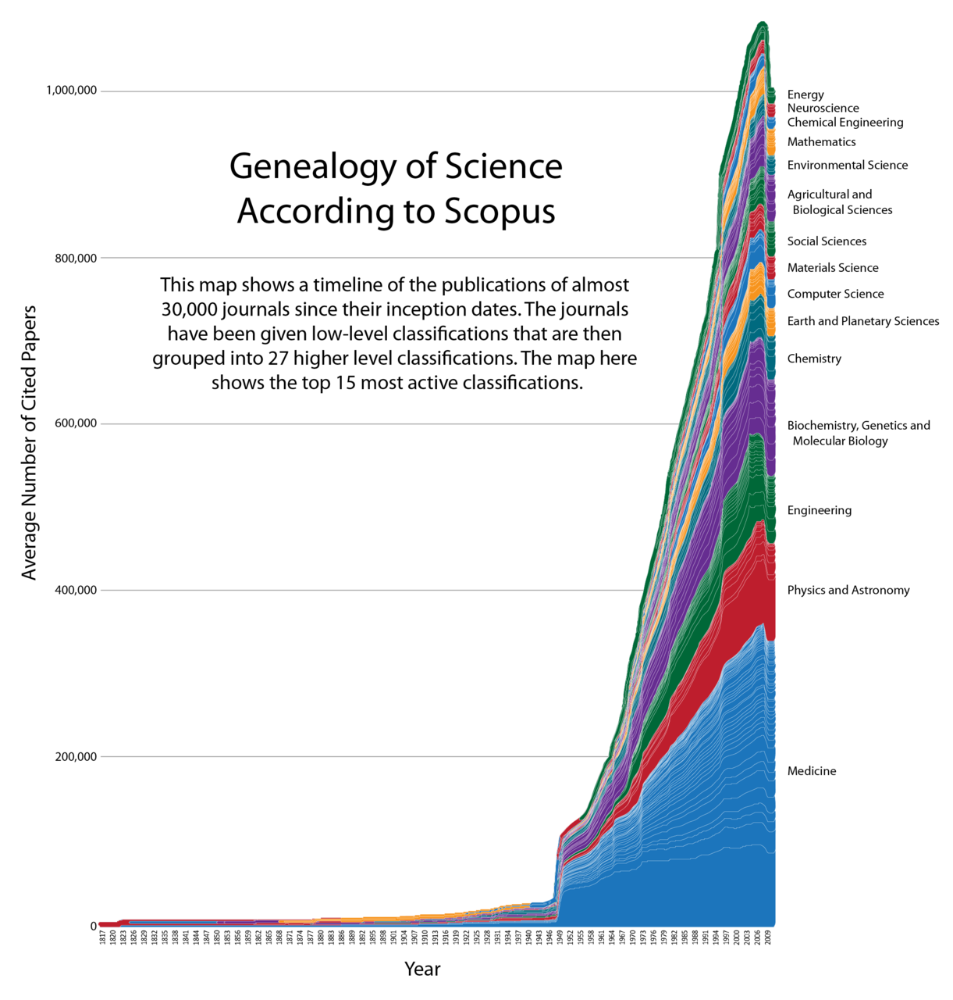
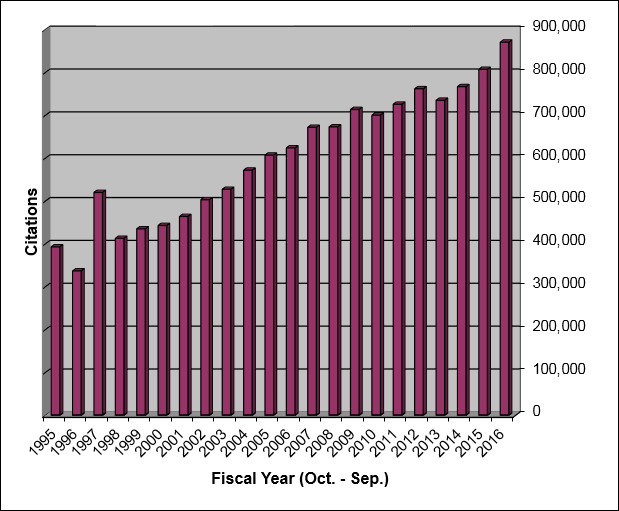
Citations added to Medline by Fiscal Year
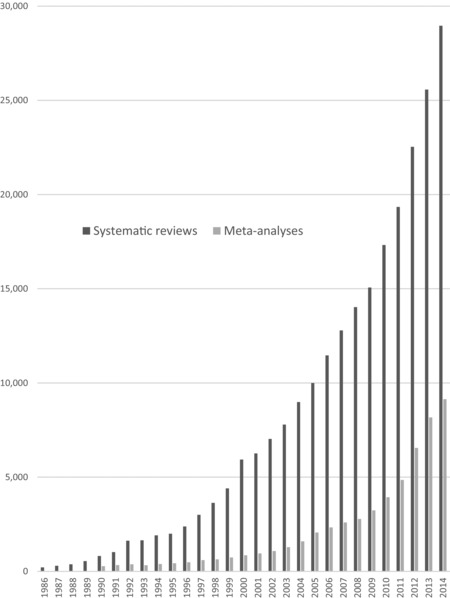
Growth of Systematic Reviews and Meta-analysis
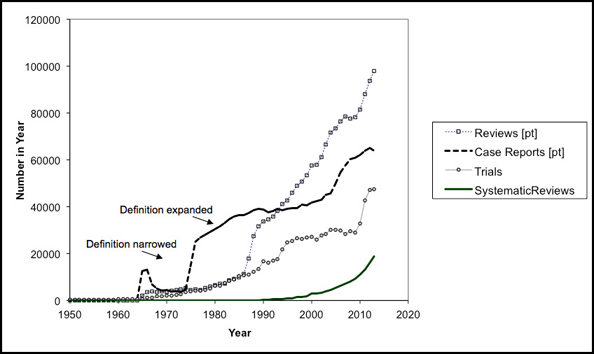
## Disciplinary Databases - Medline/Pubmed (& PMC) - EMBASE - CINAHL - Cochrane - ERIC (education) - PsycInfo - Sociological Abstracts <aside class="notes"> </aside>
## Other Types of Databases - Dissertations & Thesis - Conference proceedings - Institutional Repositories - National/region databases (LILACS) - Pre-print servers - Pre-registration servers (clinicaltrials.gov) - Books (aka Monographs) <aside class="notes"> </aside>
## Grants - Foundations Directory Online - Pivot - Websites - Grants.gov <aside class="notes"> </aside>
## Data - Institutional Repositories (e.g. DRUM) - Online general data repositories (e.g.figshare) - Datatype specific repositories (dbgap) - Faculty websites (please no.)* <aside class="notes"> </aside>
## Grey Literature > "That which is produced on all levels of government, academics, business and industry in print and electronic formats, but which is not controlled by commercial publishers." <small>The Fourth International Conference on Grey Literature</small> <aside class="notes"> </aside>
## Metadata problems - Language is variable & Author's don't write to be found - Errors are everywhere - Indexing is too complex for most users - Indexing is bad for interdisciplinary and social determinants of health topics <aside class="notes"> </aside>
## Language is variable & Authors Don't Write to be Found - Cancer/s - Neoplasm/s - Tumor/Tumour/s - Uncontrolled cell growth - Specific disease names - Identifiers <aside class="notes"> </aside>
## errors are everywhere 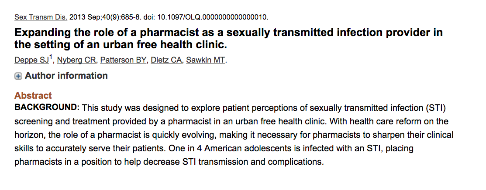 <aside class="notes"> </aside>
## Representations of Marijuana in MeSH - Cannabis - Medical marijuana - Marijuana smoking - Marijuana abuse - Cannabinoids - Cannabidiol - Cannabinol - Dronabinol <aside class="notes"> </aside>
## Indexing is bad for new, interdisciplinary, and social determinants of health topics <aside class="notes"> </aside>
# Strategies For being Evidence-Based <aside class="notes"> </aside>
- Pragmatism & the usefulness equation - Clinical vs. Research searching and triaging questions - Think about stakeholders - Bradeford's Law - Problems with Systematic Reviews <aside class="notes"> </aside>
## Pragmatism & the usefulness equation 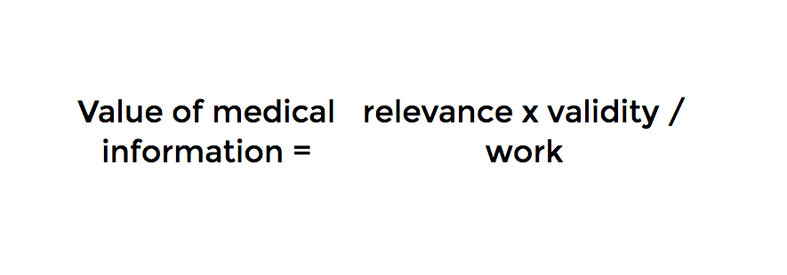 <aside class="notes"> </aside>
## Clinical Searching, EBP, and Triaging Questions <img src="https://www.students4bestevidence.net/wp-content/uploads/2013/02/ebmpyramid.jpg" style="width: 70%; height: 70%"/> <aside class="notes"> </aside>
## Problems with Systematic Reviews 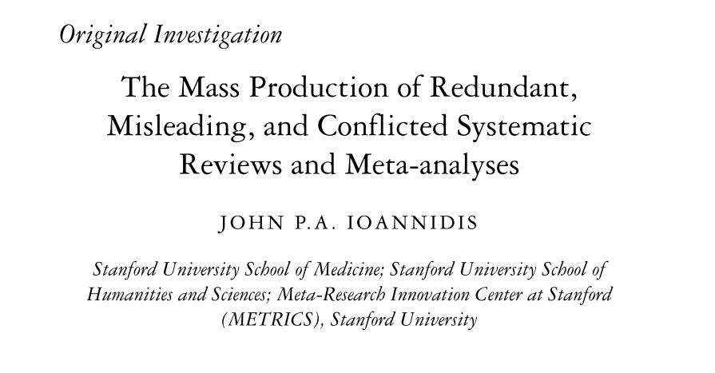 <aside class="notes"> </aside>
# Problems of Trust <aside class="notes"> </aside>
## Publication Bias & Missing Data <aside class="notes"> </aside>
## Moving Goalposts <aside class="notes"> </aside>
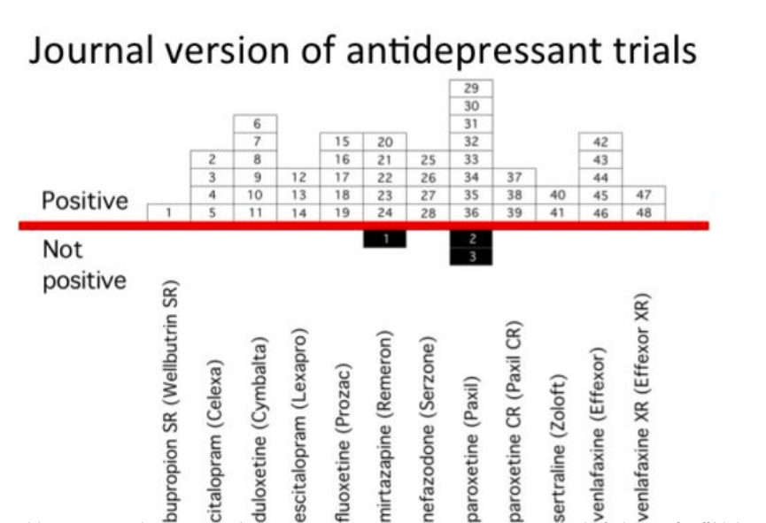 <aside class="notes"> </aside>
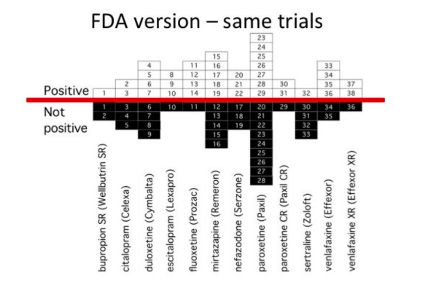 <aside class="notes"> </aside>
## Errors 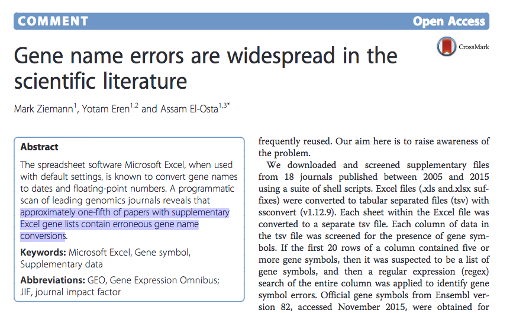 <aside class="notes"> </aside>
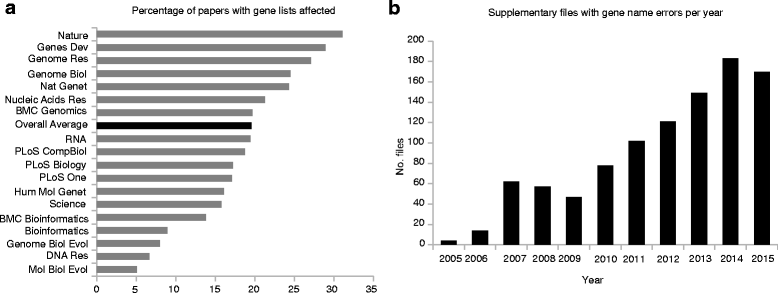 <small>https://genomebiology.biomedcentral.com/articles/10.1186/s13059-016-1044-7</small> <aside class="notes"> </aside>
# Reproducibility & How to Improve Reporting and Packaging of Research <aside class="notes"> </aside>
## Reproducibility Guidelines - TOP Guidelines* - NIH/NSF - ASA - Society, methodology, etc. guidelines <aside class="notes"> </aside>
### Reproducibility > "the ability of a researcher to duplicate the results of a prior study using the <em style="color:Tomato;">same materials and procedures</em> as were used by the original investigator." <small>Bollen, K., Cacioppo, J., Kaplan, R., Krosnick, J. A., & Olds, J. L. (2015). Social, Behavioral, and Economic Sciences Perspectives on Robust and Reliable Science. Report of the Subcommittee on Replicability in Science Advisory Committee to the National Science Foundation Directorate for Social, Behavioral, and Economic Sciences.</small> <aside class="notes"> First, quick definitions. These definitions come from NSF report. Definitions for reproducibility and replicability vary and often conflict between sources. </aside>
### Replicability > “the ability of a researcher to duplicate the results of a prior study if the same procedures are followed but <em style="color:Tomato;">new data are collected</em>.” <small>Bollen, K., Cacioppo, J., Kaplan, R., Krosnick, J. A., & Olds, J. L. (2015). Social, Behavioral, and Economic Sciences Perspectives on Robust and Reliable Science. Report of the Subcommittee on Replicability in Science Advisory Committee to the National Science Foundation Directorate for Social, Behavioral, and Economic Sciences.</small> <aside class="notes"> This is distinguished from replicability, which is the ability to duplicate (not necessarily exactly) the results while gathering new data. Replicability goes further than reproducibility, and in many ways relies on the same things as reproducibility. </aside>
### TOP (Transparency and Openness Prom otion) Guidelines
### TOP Guidelines <p><em style="color:Tomato;"> Proper Citation of:</em> data, code, and materials.</p> <p class="fragment fade-up"><em style="color:Tomato;">Data Transparency, Analytic Methods (code) Transparency, Research Materials Transparency:</em> Sharing of underlying data, analytical code, and research materials.</p> <aside class="notes"> </aside>
### TOP Guidelines <p><em style="color:Tomato;">Design and analysis transparency:</em> This standard encourages authors to follow explicit guidelines for disclosing key aspects of research design and analysis.</p> <p class="fragment fade-up"><em style="color:Tomato;">Preregistration:</em> both of studies and analysis plans.</p> <p class="fragment fade-up"><em style="color:Tomato;">Replication:</em> This standard relates to the journal's willingness to publish direct replications of studies it previously published.</p> <aside class="notes"> </aside>
# Solutions <aside class="notes"> </aside>
### Reporting * Was the research published? <em style="color:Tomato;">(Registered Reports, Pre-Registration, Pre-Prints, Traditional Publications)</em> * Were methods adequately reported? <em style="color:Tomato;">(Reporting Guidelines)</em> * Was there analysis plan transparency? <em style="color:Tomato;">(pre-registration)</em> <aside class="notes"> </aside>
### Reporting * Was there code, data, and materials transparency? <em style="color:Tomato;">(Disciplinary and institutional repositories, appropriate citation of papers, code, materials, Data Management)</em> * Is the published article accessible? <em style="color:Tomato;">(Open Access, Preprints, Self-Archiving)</em> * Is the published article discoverable? <em style="color:Tomato;">(Indexing, Properly applied metadata)</em> <aside class="notes"> </aside>
## Bibliography <aside class="notes"> </aside>
## Image Credits <aside class="notes"> </aside>